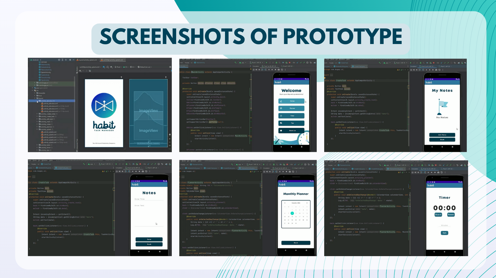

Habit Task Manager: An Android Mobile Application
User-Interface Designer | Frontend Developer
An android mobile application that aims to enhance productivity,
improve time management skills, and make task prioritization easier.
